Siz Yola Odaklanın
Şahidim Var, iPhone'unuzu bir araç kamerasına dönüştürür. Bir kaza, hasar tartışması ya da ceza itirazında elinizde kanıt olarak kullanılabilecek bir kayıt olur.
 iPhone · iOS 26 ve sonrası
iPhone · iOS 26 ve sonrası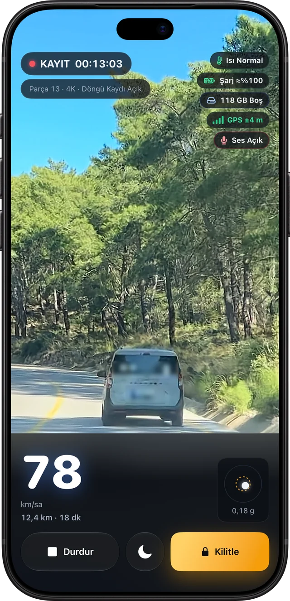
Yer dolunca en eskisi silinir
Kilitli klipler silinmez. Kısa Döngü açıkken yalnızca son 2 dakika tutulur.
Her karede
Tarih, saat, hız ve konum her karenin üzerine yazılır.
Yüksek çözünürlük
Yolu 4K çözünürlükte kaydedin. Ayrıntılar daha net görünür.
Aracın içi de
Kabin kamerası açıkken aracın içi de kaydedilir.
Bir Yolculukta Şahidim Var
Yola Çıkıştan Eve Dönüşe
-
DURAK 01
Arka Planda Kayıt
Kayıt Arkada Sürsün
Navigasyona geçin. Kamera küçük pencerede kayda devam eder.
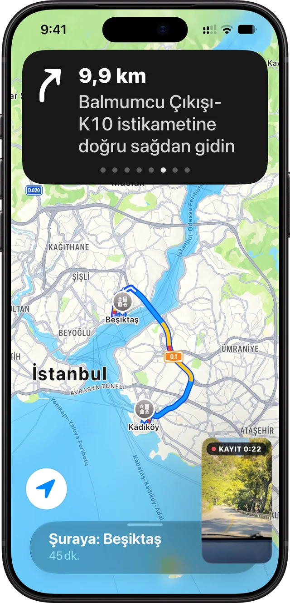
-
DURAK 02
Yatay Kayıt
Tutucuya Nasıl Takarsanız
Yatay ya da dikey takın. Ekran kayıt sürerken de döner.
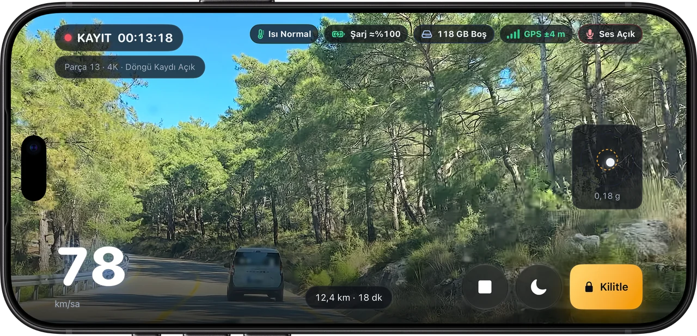
-
DURAK 03
Olaylar
Olay Anı Kilitlensin
Telefon tutucudayken ani fren, ani hızlanma, sert viraj ve darbeler algılanır. Olay anının videosu kilitlenir. Döngü kaydı onu silmez.
Darbeden sonra kontrol listesi, fotoğraflar ve tanık bilgisi tek ekranda.
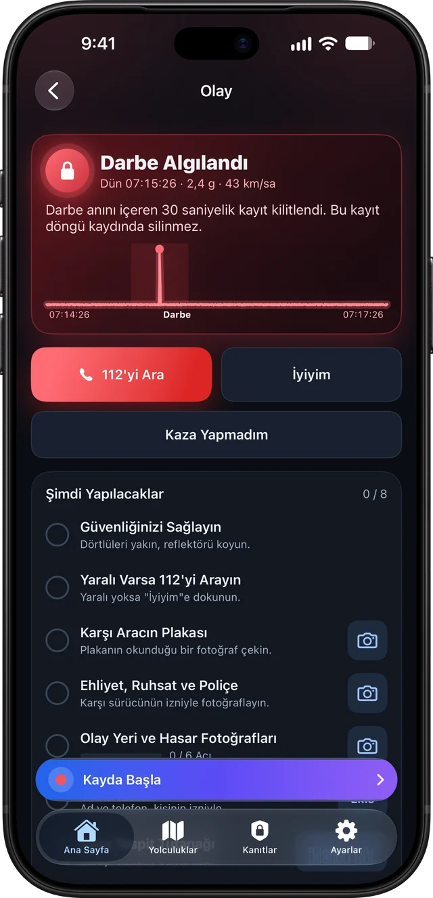
-
DURAK 04
Delil Paketi
Rapor, Klip ve Rota Tek Pakette
Klip, PDF rapor, ölçüm verisi ve dosyaların SHA-256 parmak izleri tek pakette. Paket telefonunuzda hazırlanır. Siz paylaşmadıkça telefondan çıkmaz.
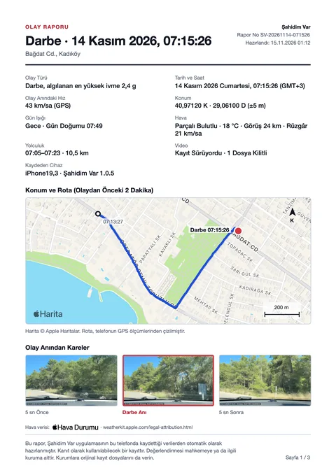
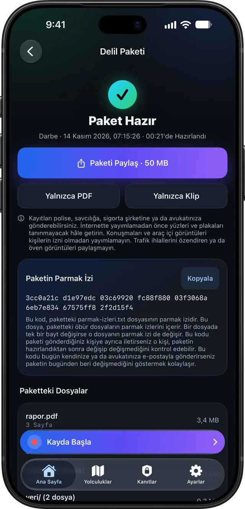
-
DURAK 05
Yolculuklar
Her Yolculuk Haritada
Video, rota, hız grafiği ve olaylar aynı ekranda. Bütün yolculuklarınız tek haritada. Sık kullandığınız yollar daha parlak görünür.
Uygulamayı açmayı unutsanız da otomatik yolculuk rotanızı videosuz kaydeder.
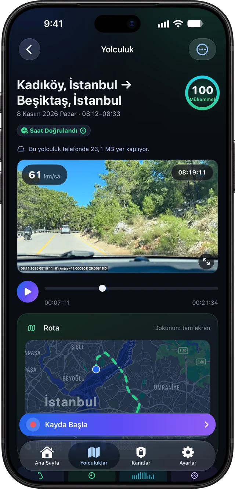
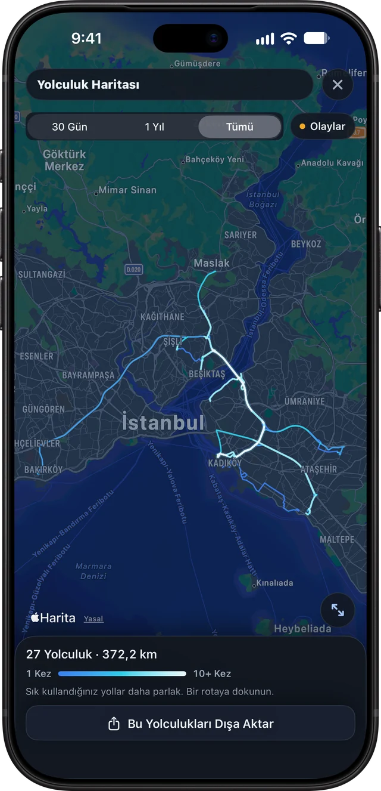
-
DURAK 06
Kiralama Modu
Kiralık Araçta Önce Fotoğraf Turu
Teslim alırken ve teslim ederken aynı açılardan fotoğraf. Alış ve iade fotoğrafları yan yana. Yeni bir hasar hemen fark edilir. Kiralama raporunu paylaşabilirsiniz.
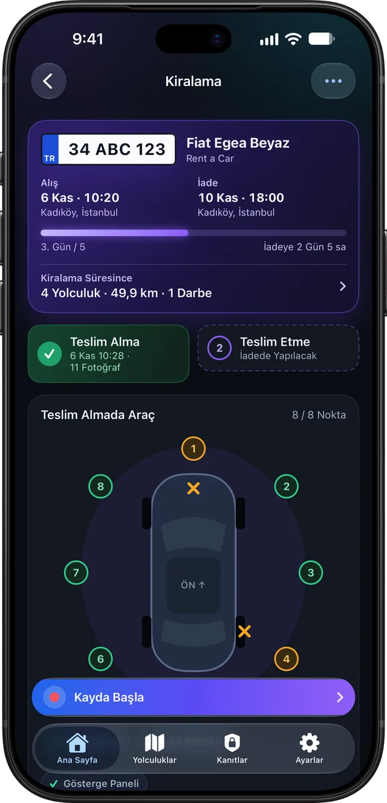
-
VARIŞ
Sürüş Puanı
Sürüşünüz Kaç Puan?
Ani fren, hızlanma ve virajlara göre 0 ile 100 arası puan. Son 30 günün puanı, Bronz'dan Platin'e kademenizi belirler. İstemezseniz kapatabilirsiniz.
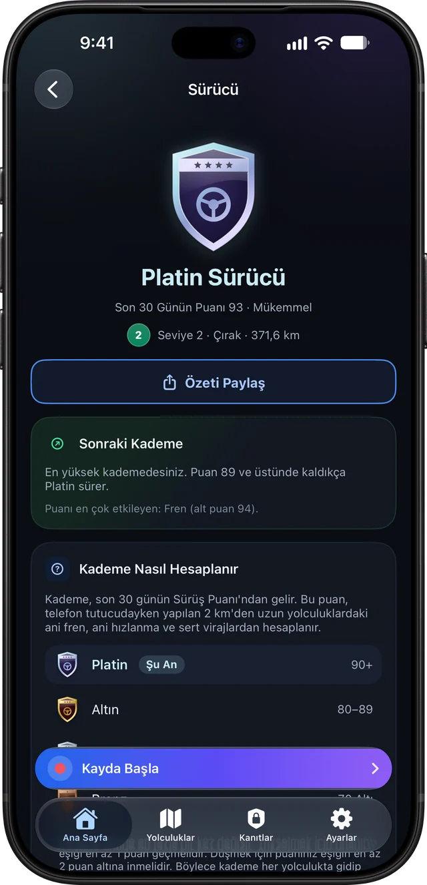
App Store'daki Görseller
Kaydırarak bakın →
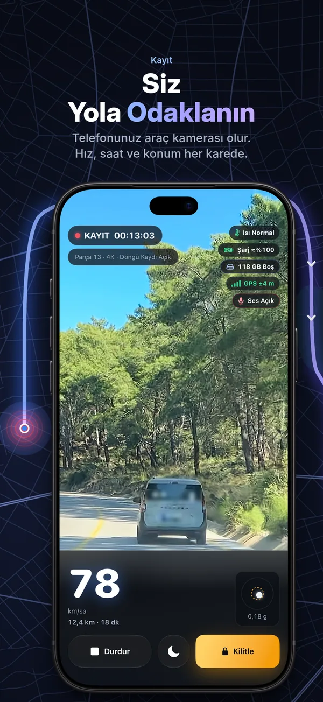
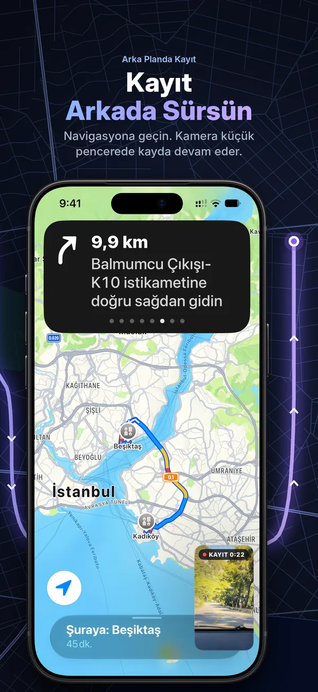
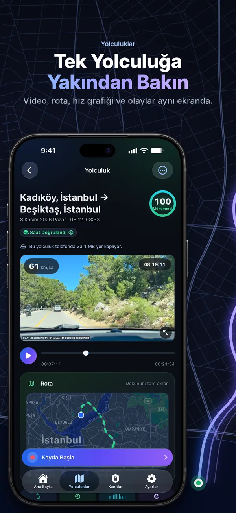
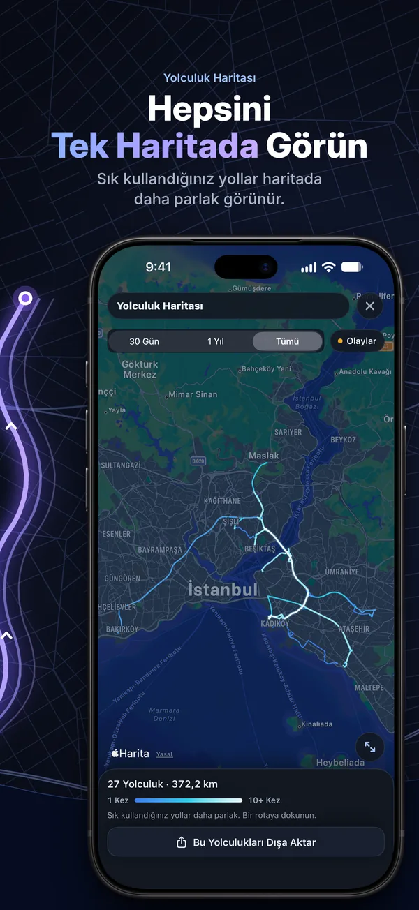
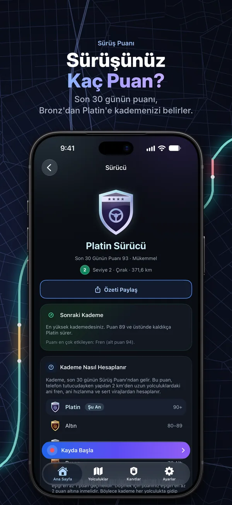
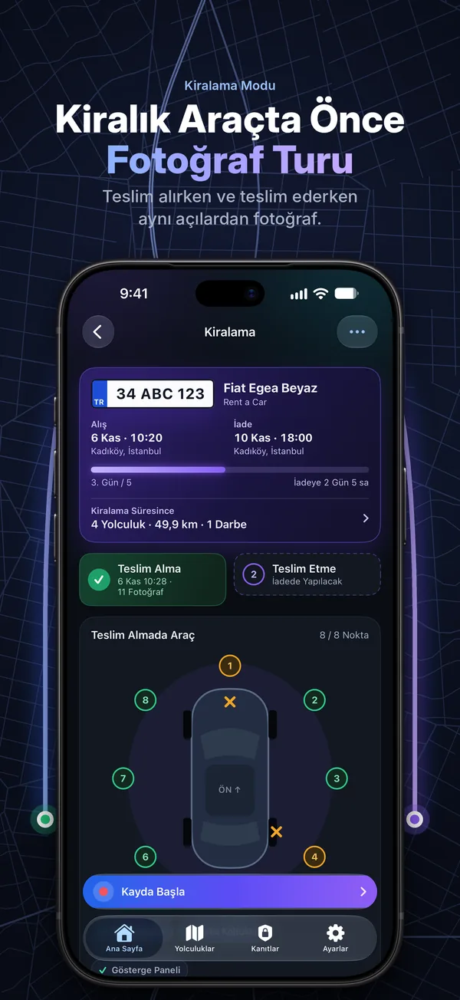
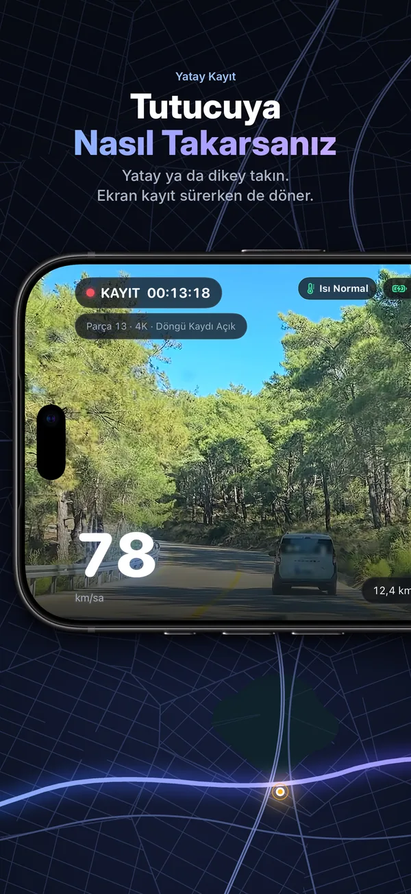
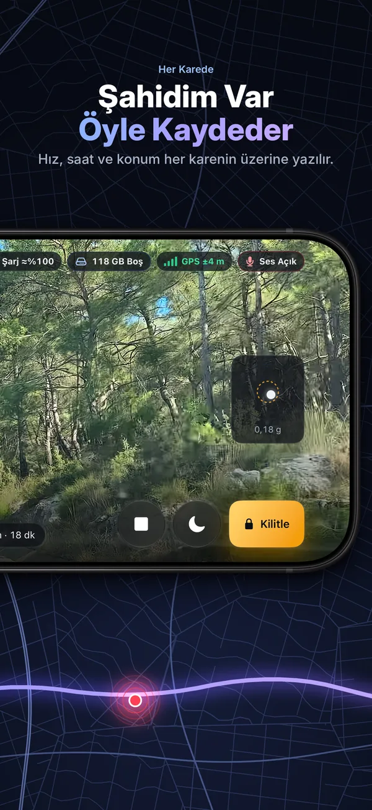
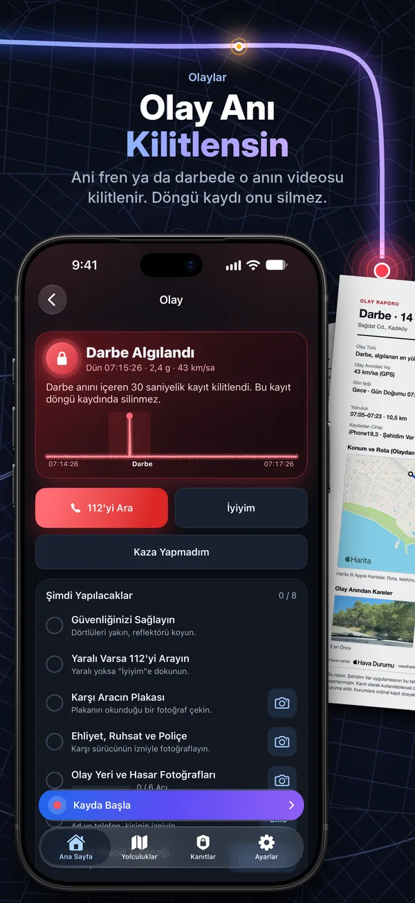
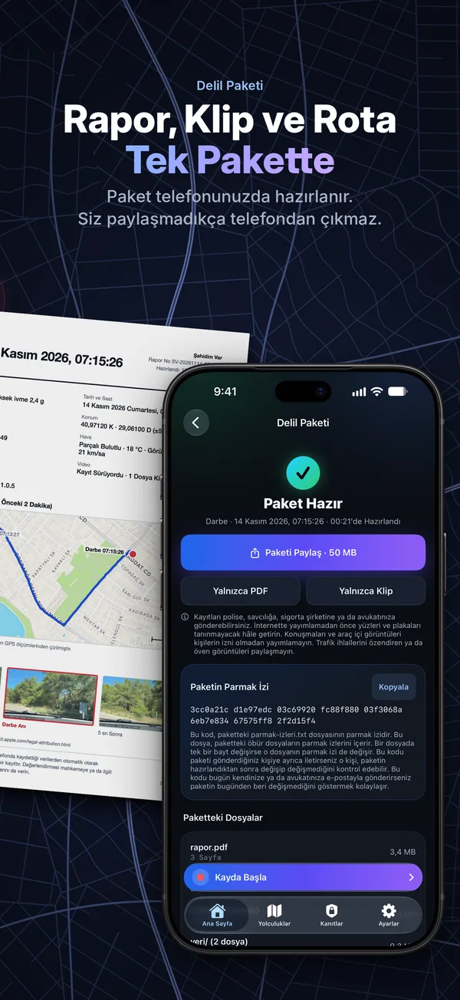
Gizlilik
Kayıtlar Yalnızca Sizde
Konum, video ve ses kayıtlarınız telefonunuzda saklanır. Bize iletilmez. Bir kaydı yalnızca siz paylaşabilirsiniz.
- Hesap yok
- Sunucu yok
- Reklam yok
Türkiye dışında Kayıt Kasası'nı açarsanız kilitli klipler ve yolculuklar kendi iCloud hesabınıza da yedeklenir. Gizlilik Politikası
Sürerken telefona dokunmayın. Uygulama acil durum hizmeti değildir. Kendiliğinden arama yapmaz ve her çarpışmayı algılamayabilir.